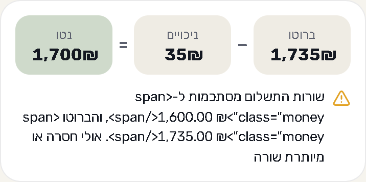
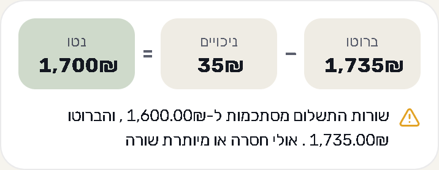

המילה נטו על הרקע הירוק עמדה על ניגודיות 4.4:1, מתחת לסף של התקן הישראלי (IS 5568, כמו WCAG 2.0 AA: 4.5:1). הצבע שלה התכהה מעט בבהיר והתבהר מעט בכהה. axe לא מוצא עכשיו שום בעיית ניגודיות במסך הזה.


| מדד | לפני | אחרי |
|---|---|---|
| ניגודיות נטו, בהיר | 4.4:1 | 5.4:1 |
| ניגודיות נטו, כהה | 5.1:1 | 5.8:1 |
| axe color-contrast (he/en) | 1 | 0 |